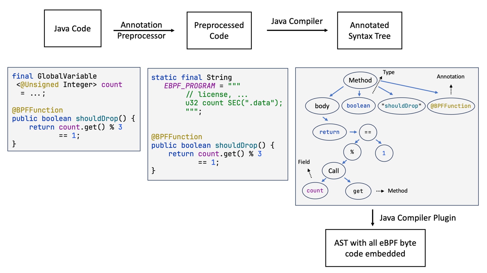
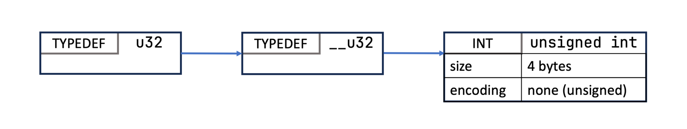
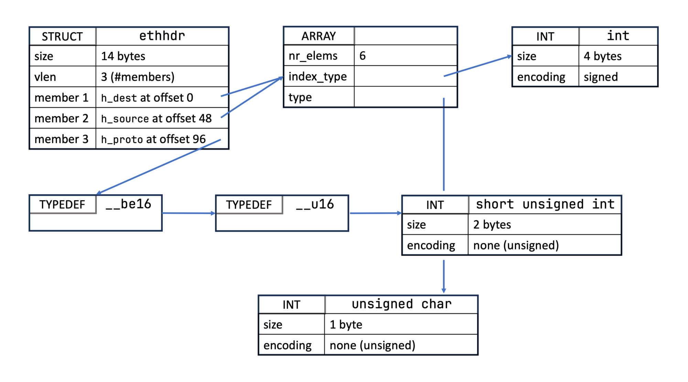

How the Plugin Works¶
Blog series: Part 5 — First steps with libbpf · Part 8 — Generating C code from Java · Part 11 — BTF and 13,000 generated Java classes · Part 12 — Write eBPF in pure Java
Talks: hello-ebpf: Writing eBPF Programs Directly in Java (LPC 2024) · Building a Lightning Fast Firewall with Java & eBPF (JavaZone 2024)
Javadoc: BPFProgram · @BPF · @BPFFunction · @Type · @BPFMapDefinition

The kernel BPF verifier operates on eBPF bytecode. The only production-quality
compiler that targets that bytecode is clang. hello-ebpf does not bypass that
requirement — it makes clang invisible. You write @BPFFunction methods in
Java; the build toolchain translates them to C, invokes clang, and bundles the
resulting .o into your jar before javac finishes.
§1 The two build phases¶
A single mvn package run triggers two distinct javac phases for every
@BPF-annotated class.
Phase 1 — Annotation processor (bpf-processor).
Runs at round 1 of javac annotation processing
(bpf-processor/src/main/java/me/bechberger/ebpf/bpf/processor/Processor.java).
It discovers @BPFMapDefinition fields and @Type-annotated
records, resolves their BTF struct layouts via TypeProcessor.java, and writes a .bpf.json manifest
that the compiler plugin reads in phase 2.
Phase 2 — Compiler plugin (bpf-compiler-plugin).
Runs during the compilation pass, after annotation processing
(bpf-compiler-plugin/src/main/java/me/bechberger/ebpf/bpf/compiler/CompilerPlugin.java).
For each @BPF class it walks the AST of every @BPFFunction method, translates
Java constructs to C, and writes a .bpf.c source file. It then invokes clang,
embeds the resulting .o as a jar resource, and replaces each @BPFFunction
body with throw new MethodIsBPFRelatedFunction() so the JVM never executes it.
Your @BPF class
│
│ annotation processor (bpf-processor)
▼
.bpf.json manifest (BTF layouts, map defs)
│
│ compiler plugin (bpf-compiler-plugin)
▼
generated .bpf.c ──► clang ──► .o (embedded in jar)
│
│ BPFProgram.load(YourClass.class) at runtime
▼
libbpf ──► kernel verifier ──► attached BPF prog
§2 What the plugin translates¶
The compiler plugin covers the following Java-to-C mappings:
int/long→__u32/__u64;@Unsignedqualifiers applied where present.Ptr<T>→ C pointerT *.@InArena Ptr<T>→T __arena *(BPF arena address space).- Field access on BPF structs → CO-RE access via
BPF_CORE_READ. - BPF map operations (
bpf_get,put, etc.) → corresponding kernel helper calls. @BPFFunctioncalls within the same class → static C function calls.
§3 Extending the plugin — @BuiltinBPFFunction templates¶
Javadoc: @BuiltinBPFFunction
When a method in a @BPFInterface or map class cannot be expressed as a normal @BPFFunction body — because the C code is a single expression, involves a GNU statement expression, or needs to reference the receiver or a specific argument positionally — annotate it with @BuiltinBPFFunction and provide a C template string. The plugin substitutes $-placeholders at call sites and inlines the result directly.
Placeholder reference¶
| Placeholder | Expands to |
|---|---|
$this |
The receiver expression (map variable name, context pointer, …) |
$arg1, $arg2, … |
The n-th argument expression (1-based) |
$args |
All arguments, comma-separated |
$argsN_ |
Arguments from the N-th onwards |
$pointery$argN |
&argN if it is a value type; argN if it is already a pointer or String |
$typeof$argN |
__typeof__(argN) — useful in GNU statement expressions for temporary variables |
$sizeof$argN |
sizeof(argN) |
$deref$argN |
*(argN) |
$str$argN |
Raw string content of a StringConstant argument (no surrounding quotes) |
$strlen$argN |
Length of a StringConstant argument as an integer literal |
$T1, $T2, … |
n-th generic type argument of the enclosing map class |
$funcN |
Promotes the n-th lambda argument to a named top-level C function; expands to that function's name |
$lambdaN:code |
Inline body of the n-th lambda argument |
A leading ! in the template wraps the whole expression in !(…) — useful for helpers that return 0 on success.
Examples¶
// Simple field access on the receiver
@BuiltinBPFFunction("($this->data)")
int data();
// Map lookup — $pointery wraps non-pointer keys in & automatically
@BuiltinBPFFunction("bpf_map_lookup_elem(&$this, $pointery$arg1)")
Ptr<V> bpf_get(K key);
// Map update, return value inverted to boolean
@BuiltinBPFFunction("!bpf_map_update_elem(&$this, $pointery$arg1, $pointery$arg2, BPF_ANY)")
boolean put(K key, V value);
// GNU statement expression for atomic increment
@BuiltinBPFFunction("({ __typeof__($arg2) *___v = bpf_map_lookup_elem(&$this, $pointery$arg1); " +
"if (___v) __sync_fetch_and_add(___v, $arg2); })")
void bpf_increment(K key, V delta);
// GNU statement expression for lookup-or-default
@BuiltinBPFFunction("({ __typeof__($arg2) *___v = bpf_map_lookup_elem(&$this, $pointery$arg1); " +
"___v ? *___v : $arg2; })")
V bpf_getOrDefault(K key, V defaultValue);
// Composite expression using a literal and a helper
@BuiltinBPFFunction("scx_bpf_dsq_insert($arg1, 1 + scx_bpf_task_cpu($arg1), SCX_SLICE_DFL, $arg2)")
void insertOnCurrentCpu(task_struct task, long slice);
The template source and parser live in
bpf-compiler-plugin/src/main/java/me/bechberger/ebpf/bpf/compiler/MethodTemplate.java.
Real-world examples are in BPFBaseMap.java, XDPContext.java, and TCContext.java.
§4 Adding your own C code — the four extension hooks¶
Javadoc: @BPFInterface · @BPFMapClass · @BPFAbstraction · @AlwaysInline
hello-ebpf exposes four annotation-driven hooks for injecting raw C into the generated .bpf.c. They are listed here in order of how often you'll need them.
1. @BPFInterface(before=…, after=…) — inject C at file scope¶
@BPFInterface turns a Java interface into a plugin-visible BPF interface. Any @BPF class that implements it gets the interface's default @BPFFunction methods compiled in. The before and after attributes let you inject verbatim C at the top or bottom of the generated file — the right place for #define macros, #include directives, helper C functions, or kfunc declarations that your @BPFFunction bodies need.
@BPFInterface(
before = """
#define MY_THRESHOLD 1024
static __always_inline int clamp_to_threshold(int v) {
return v > MY_THRESHOLD ? MY_THRESHOLD : v;
}
""")
public interface MyHelpers {
@BuiltinBPFFunction("clamp_to_threshold($arg1)")
@BPFFunction
default int clamp(int value) { throw new MethodIsBPFRelatedFunction(); }
}
// Then implement it on your @BPF class:
@BPF(license = "GPL")
public abstract class MyProg extends BPFProgram implements XDPHook, MyHelpers {
@Override
@BPFFunction
public int xdpHandlePacket(Ptr<xdp_md> ctx) {
int len = clamp(ctx.val().data_end - ctx.val().data);
// …
return XDP_PASS;
}
}
The generated .bpf.c will open with your #define and clamp_to_threshold function, and clamp(…) calls will expand to clamp_to_threshold(…) at every call site.
Real-world uses: SchedulerHelpers.java (injects scx_bpf_error wrapper macro), CGroupHook.java (injects cgroup attach boilerplate).
2. @BPFMapClass(cTemplate=…, javaTemplate=…) — define a new map type¶
@BPFMapClass on a class that extends BPFMap (or any subclass) registers a new BPF map type. The plugin uses cTemplate to emit the map's C struct into .bpf.c whenever a field of this type is declared with @BPFMapDefinition, and javaTemplate to instantiate the Java wrapper at load time.
Placeholders in both templates:
| Placeholder | Value |
|---|---|
$field |
C variable name (the Java field name) |
$maxEntries |
The maxEntries value from @BPFMapDefinition |
$class |
Fully-qualified Java class name |
$c1, $c2, … |
C type names of the generic type parameters |
$b1, $b2, … |
BPFType expressions for the generic type parameters |
$j1, $j2, … |
Java class names of the generic type parameters |
$fd |
Expression that creates the Java FileDescriptor for javaTemplate |
@BPFMapClass(
cTemplate = """
struct {
__uint(type, BPF_MAP_TYPE_ARRAY);
__type(key, u32);
__type(value, $c1);
__uint(max_entries, $maxEntries);
} $field SEC(".maps");
""",
javaTemplate = "new $class<>($fd, $b1, $maxEntries)")
public class BPFArray<V> extends BPFBaseMap<@Unsigned Integer, V> { … }
A @BPFMapDefinition field using this class:
…emits exactly the struct above with $field = counters and $maxEntries = 512.
3. @BPFAbstraction — zero-cost compile-time wrappers¶
@BPFAbstraction marks a class as a pure compile-time alias — it has no C representation at all. Locals and fields of this type are inlined away; every method call is rewritten via @BuiltinBPFFunction templates. Use it to give a friendly Java API to a kernel concept (a dispatch queue, a CPU mask, a flag set) without adding any runtime overhead.
@BPFAbstraction(constructorPrependTo = "init")
public final class DispatchQueue {
// Constructor: C side-effect + carrier expression
@BuiltinBPFFunction(value = "scx_bpf_create_dsq($arg1, -1)", carrier = "$arg1")
@NotUsableInJava
public DispatchQueue(@Unsigned long id) { throw new MethodIsBPFRelatedFunction(); }
@BuiltinBPFFunction("scx_bpf_dsq_move_to_local($this)")
@NotUsableInJava
public boolean moveToLocal() { throw new MethodIsBPFRelatedFunction(); }
}
In a @BPF class:
// Field declaration — no C struct member emitted
final DispatchQueue shared = new DispatchQueue(SHARED_DSQ_ID);
// → injected into init() prologue: scx_bpf_create_dsq(SHARED_DSQ_ID, -1);
// → everywhere 'shared' appears: SHARED_DSQ_ID
shared.moveToLocal();
// → scx_bpf_dsq_move_to_local(SHARED_DSQ_ID)
constructorPrependTo names the @BPFFunction method into whose generated C body the constructor side-effect is injected (default "init"). Set it to "" to require explicit construction inside a @BPFFunction instead.
Real-world uses: DispatchQueue.java, CpuMask.java, EnqFlags.java, KickFlags.java.
4. @AlwaysInline / @BPFInline — force-inline a @BPFFunction¶
Adding @AlwaysInline (or its alias @BPFInline) to a @BPFFunction method causes the plugin to emit static __always_inline instead of static in the C output. The BPF verifier inlines __always_inline functions at the call site, which eliminates the function-call overhead and is required for some helper patterns that the verifier won't accept across a call boundary.
§5 Inspecting the generated C¶
The file is plain C. Verifier errors reported by dmesg or libbpf refer to
symbols defined in it. bpftool prog dump xlated output maps back to the same
symbol names.
§6 CO-RE and portability¶
The generated C uses BPF_CORE_READ for every struct field access. This macro
emits BTF relocations into the .o; libbpf resolves them at load time against
the running kernel's BTF. The result is a single .o that loads on any kernel
≥ 5.2 that exports BTF (CONFIG_DEBUG_INFO_BTF=y), without recompilation or
per-kernel headers. CO-RE handles field offset changes across kernel versions,
but it cannot compensate for fields that have been removed or structs that have
been fundamentally restructured — in those cases the load succeeds but reads
return incorrect data. In practice this is rare for stable kernel ABI surfaces.
hello-ebpf auto-generates ~13,000 Java wrapper classes from the kernel's BTF so you get typed access to every kernel struct without maintaining headers manually.


§7 What the processor and plugin do not touch¶
main() and all non-@BPFFunction methods run unchanged on the JVM. Map
field access from Java (e.g. myMap.get(key)) uses the Panama/libbpf binding,
not the BPF side. The two call paths — kernel eBPF program and Java user-space
code — share the same file descriptor returned by BPFProgram.load().
For the error-classifier, diagnostic messages, and plugin extension points, see Architecture: Compiler Plugin and Diagnostics.
Further reading¶
- Your First BPF Program — hands-on walkthrough using the pipeline
- Diagnostics — reading verifier logs and error messages
- Cheatsheet — quick reference for annotations and helpers
- hello-ebpf at LPC 2024 (slides)
Talk: hello-ebpf at Linux Plumbers Conference 2024¶
The LPC talk covers the full compiler pipeline, annotation preprocessor, and BTF class generation in depth — good companion to this page.